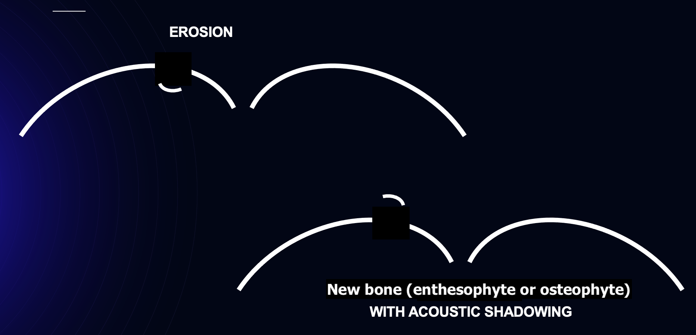
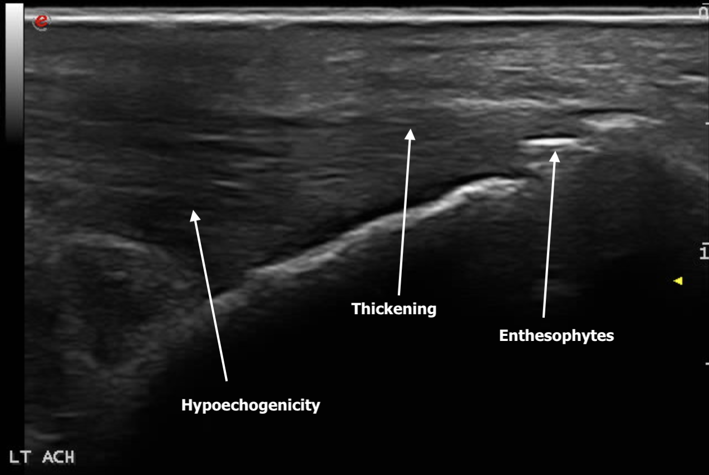
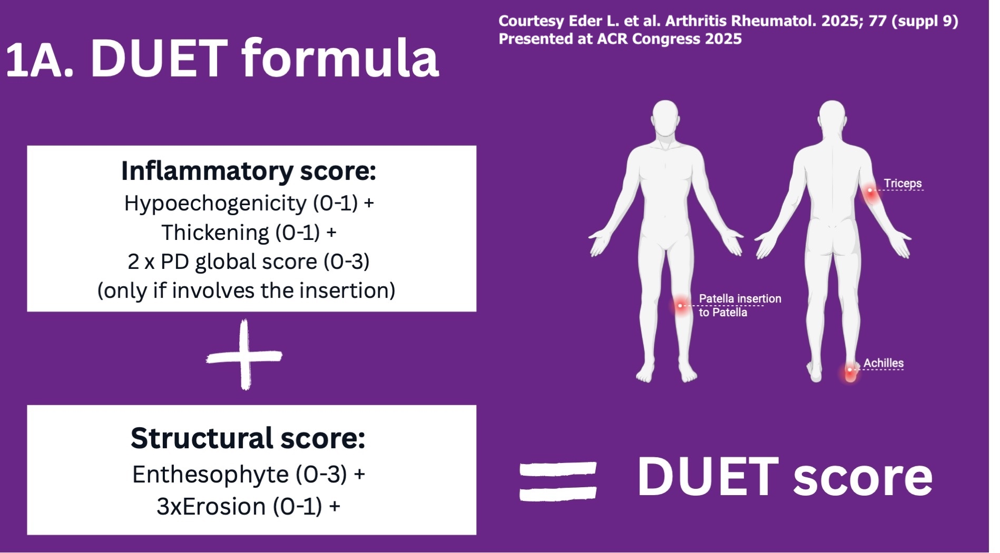

Case 8
Case Vignette
48-year-old woman with longstanding psoriasis, referred for assessment of psoriatic arthritis because of bilateral posterior ankle pain. (Expand for full history, exam & investigations.)
A 48-year-old accountant with longstanding psoriasis is referred to your clinic for assessment of psoriatic arthritis because of "ankle pain." Her pain is in the posterior aspect of the ankle, by the Achilles, bilaterally. It hurts a little at rest but worsens with use, such as walking longer distances and hiking. She notices intermittent subjective swelling, more so at the left Achilles. She has not noticed swelling at the anterior ankle, midfoot or forefoot, and no other joints are bothersome.
The pain responds to acetaminophen (mild benefit) and over-the-counter NSAIDs (moderate benefit). She has a family history of psoriasis and psoriatic arthritis. She neither smokes nor drinks. She has pre-diabetes and borderline elevated lipids but is not currently on medication for either. Her only medication is guselkumab (an IL-23 inhibitor) for her psoriasis, through her dermatologist.
On examination her BMI is 30. She has no active psoriasis and no nail changes. No joints are swollen today and there is no dactylitis. She is tender at both Achilles tendons, and there is a small bump at the left Achilles distally, just before its insertion into the calcaneus. No other entheses are tender. Axial examination is normal.
X-rays comment on bilateral Achilles enthesophytes and are otherwise normal. She is HLA-B27 positive. Her CRP is 15 mg/L (normal <10).
You decide to do a point-of-care ultrasound of the Achilles and to screen for enthesitis.

Select all correct answers.

Select all correct answers.

You remember the DUET study and scoring system, and realise that the triceps and the patellar tendon insertion into the patella are the other screening sites for inflammatory enthesitis in PsA. You take a look at her triceps tendon.
Select all correct answers.